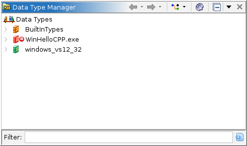
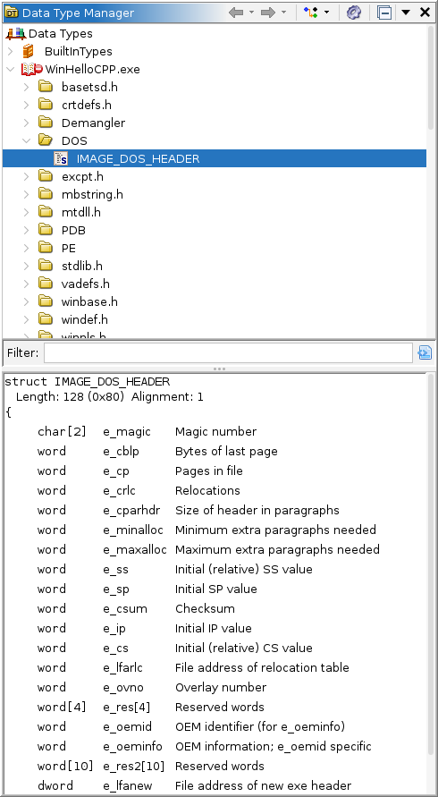
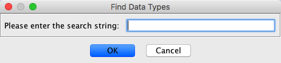
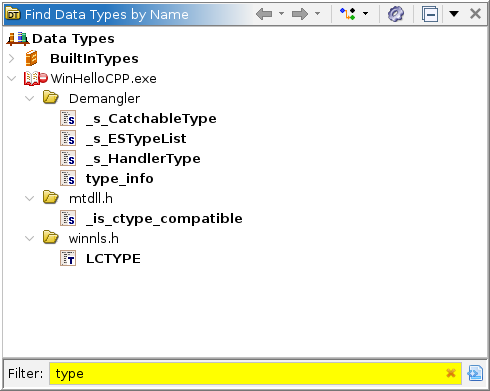

The Data Type Manager window shows the data types and their categories using a
tree structure. To bring up the window, click on the icon in the tool bar, or select the Window Data Types... menu option in the
tool.
Data Types... menu option in the
tool.

The Data Type Tree
The first level nodes under the root are archive nodes. There are two special archive nodes: one for standard "Built-in" data types and one for data types that are stored in the current program. Additional archive nodes are created for each open data type archive file. Archive nodes can contain both category nodes and "data type" nodes. Category nodes can contain data type nodes and other category nodes. Data type nodes are leaf nodes and they represent a specific data type.
The different colors of the archive nodes indicate the type of archive:
- Built-in archive data types - Program data types - Project Archive - File Archive Archive Icon modifiers (These icons are overlayed with the icons above)
- Indicates the archive is modifiable by you and possibly by others in your shared project - Indicates the archive is currently modifiable only by you - Indicates the archive is out of date (someone has checked changes for this archive into the repository) - Indicates the archive is hijacked (modified without being checked out)
- Indicates the archive is a read only version and is not modifiable
- Indicates the archive has changes to datatypes that have not been committed back to its source archive. A commit is needed.
- Indicates the archive has datatypes from a source archive that has been been modified. An update is needed. - Indicates the archive has datatypes that need updating and datatypes that need to be committed. Other Icons used in the tree:
- Category - Built-in data type - Structure - Union - Typedef - Function Definition - Enum - Pointer - Favorite Data Type Icon modifiers (These icons are overlayed with the icons above)
- Indicates the data type has changes that need to be committed to the source archive - Indicates the data type has been updated in the source archive and needs to be updated locally. - Indicates the data type has changed both in this archive and in the source archive. (conflict)
- Indicates the data type is missing in the source archive.
Opening a program also causes file data type archives that have been associated with that program to be opened. As of Ghidra version 4.3, whenever a data type is applied from an archive to a program, that archive will become associated with the program.
By using the data type tree in various ways (drag-n-drop, cut/paste, menus, etc.), users can perform the following actions.
- Apply data types to appropriate places in a program (memory locations, parameters, local variables, etc.).
- Create new structures, unions, enums, and typedefs.
- Copy data types from one archive to another.
- Organize data types into categories and sub-categories.
- Rename data types and categories.
- Find data types by name.
- Create new file data type archives.
- Create new project data type archives.
- Delete data types and categories.
- Commit changes back to a source archive.
- Update changes from a source archive.
- Revert changes back from a source archive.
- Disassociate data types from a source archive.


Filter
Located at the bottom of the tree component, there is a text field which can be used to quickly find data types by name. As text is entered into the filter, the tree is pruned such that only nodes with names (this means that members of composite types will not be matched) that match the entered text are displayed in the tree. This field interprets the '*' character as a wild card and will match any sequence of characters. There is an assumed '*' at the beginning of the text so that matches don't have to start with the entered filter text. For example, entering "foo" will not only match "foot" and "food", but will also match "snafoo."
The Include Data Members in Filter action, when toggled on, will trigger the filter field to search the components of Composite data types and names, the fields of Enum names and values, and Function parameter data types and names. You may turn this feature off if you find that your search yields too many results for data types that have common names, such as byte.
Data Type Conflict Resolution Mode
Anytime a data type is applied, copied or moved via the Data Type tree, name conflicts can occur with existing data types within the destination archive or program. While the default conflict handler simply appends ".conflict" to the new or moved data type name, actions initiated via the tree utilize a Data Type Conflict Mode identified and selected from the Data Type tree toolbar. Four conflict modes are supported:
- Rename New or Moved Data Type is the default behavior where a unique ".conflict" suffix is appended to the new or moved data type.
- Use Existing Data Type causes the existing data type within the destination category to be used in place of the new or moved data type. All references to the moved data type within the destination archive/program will be replaced with the existing data type within the destination category.
- Replace Existing Data Type causes the existing data type within the destination category to be replaced by the new or moved data type. All references to the existing data type within the destination archive/program will be replaced with the new or moved data type.
- Replace Empty Structures else Rename performs the default ".conflict" rename except in the case when adding a conflicting structure or union that appears similar to an existing structure. The intent is to keep the structure/union which appears to be more complete than the other in its field specification.
Local Toolbar Actions
/
- Navigates forward and backward in the stack of visited data types.
- Collapses all open tree nodes, except for the root node.
- Toggles the array filter on or off. If the filter is on, array data types are not shown in the data type tree.
- Toggles the pointer filter on or off. If the filter is on, pointer data types are not shown in the data type tree.
Local Menu Actions
Open File Archive...
This action will launch a file explorer that can be used to find and open an existing file data type archive. The location (file path) of the chosen file will be added to the archive path if it isn't already there. Open Project Archive...
This action will launch a project data type archive chooser that can be used to open an existing project archive. Project data type archives live in the project and can be seen in the Ghidra Project Window. Project data type archives can also be opened by dragging them from the Ghidra Project Window to the Data Type Manager tree. New File Archive...
This action is used to create a new file data type archive. A file chooser will launched for choosing a location and name for the new file archive. The location (file path) of the new archive will be added to the archive path if it isn't already there. New Project Archive...
This action is used to create a new project data type archive. A project window browser will be launched for choosing a location in the project and a name for the new project archive. Standard Archive
This menu option will have a sub-menu item for all file archives contained within the Ghidra installation. Only those archives contained within a module data/typeinfo subdirectory will be included. If contained within a contrib module, the contrib name will also be displayed. Recently Opened Archive This menu option will have a sub-menu item for all recently opened file archives. Choosing one of the recently open archives actions will open that archive. Refresh BuiltIn Types
This action will search for new Built-in data types in the classpath. This is only useful if somehow new data type java classes have been added since Ghidra was started. Preview Window
This action will show a preview window in the lower part of the data types window. This preview window will be updated with a preview of the selected data type node. To close the preview window, simply click the Preview Window action again. Below is a picture of the data type manager with the preview window open.
 Find Data Types by Name...
This action will prompt for a search string and then launch a new Find Data Type window with its filter set to the search string. Edit Archive Paths...
This action will launch a dialog that can be used to add, remove, or reorder the directories used for searching for a file archive. Ghidra programs only store the name of the archive. Each directory in the archive path is searched in order, looking for a file archive with that name. See the section on editing archive paths.
Popup Menu Actions
The set of actions on the right-mouse popup menu change depending on what nodes are selected. These actions will be described in the appropriate sections below.
Miscellaneous Actions
Cut
The Cut action can be be used to move selected data types and/or move selected categories. The Cut action only primes the selected nodes to be moved. The Paste action must be used to complete the move. Any other Cut or Copy action will cancel the previous Cut. The Cut action can also be used to replace one data type for another.
Copy
The Copy action can be be used to copy selected data types and/or copy selected categories. The Copy action only primes the selected nodes to be copied. The Paste action must be used to complete the copy. Any other Cut or Copy action will cancel the previousCopy .
Paste
ThePaste action is used to complete a move or copy operation as initiated by either the Copy or Cut action. The node that is selected will be the destination for whatever nodes where selected when the Copy or Paste was invoked.
Rename
The Rename action is used to rename a selected category or to rename a selected data type.
Delete
The Delete action is used to delete data types and/or delete categories. A confirmation dialog will appear before actually deleting the selected data types and categories.
Collapse All
To collapse all open nodes in a sub-tree, right-click on the root node of the sub-tree and select the Collapse All action. If this action is invoked via the local toolbar, then the entire tree is collapsed.
Expand All
To expand all open nodes in a sub-tree, right-click on the root node of the sub-tree and select the Expand All action.
Apply Function Data Types
You can apply all function signature data types from an archive to the currently open Program. Function signature definitions can also be applied from the currently open program's defined data types. Applying data types from the program is useful when source header files have been parsed into the program instead of an archive. This action attempts to match the function definition with user defined symbol names in the Program. When a match is found, the Apply All action does one of the following:
- If a function already exists at the symbol, apply the function signature to the existing function.
- If a pointer exists at the symbol, create a new pointer to the function definition.
- If no data exists at the symbol and if a valid function can be created at this address, then disassemble, create a function, and apply the function signature.
Capture Function Data Types
You can capture the signatures of functions in the current program to function definition data types. These data types can be captured to the program or to a data type archive. To capture function data types, right-click on the data type manager tree node of the program or the archive where you want the function definition data types to be captured (saved) and select the Capture Function Data Types action.
- If there isn't currently a selection in the listing, the signatures for all of the functions in the program will be captured.
- If there is a selection in the listing, only the functions whose entry points are within the selection will have their signatures captured.
Once you have captured the function data types to an archive, you can use the Apply Function Data Types to apply the function definition data types to another program.
Find Data Types by Name
You can find data types with names that match a string. A separate window is displayed to show the results. Multiple search results are shown as tabs in the results window. To find data types, select the Find Data Types by Name... action from the local menu
. The following dialog is displayed.

Enter a value in the "Please enter the search string: " field, or choose a previously entered value from the combo box. Either press the <Enter> key or select the OK button. A new Find Data Type window will appear with the filter set to the entered search text.

This new window can be used in the same way as the original Data Type Manager window.
Find Data Types by Size
This is similar to the Find Data Types by Name action (show above) except that it lets you specify a size that will be used to show only those data types with the same length.
Export Data Type(s)
Data types may be exported as header files. To export a data type, select the data types to export, then right-click and select the Export as C Header... option. An output format dialog will appear. From this dialog select the language header output type (C header files are the default). A file chooser is displayed to choose the name of the output file. If the file already exists, a dialog is displayed to confirm that you want to overwrite the existing file.
Not only will the selected data types be exported, but so too will be any dependencies for the selected types. For example, if you select a structure to be exported, all of the types within that structure will be exported as well.
Create Labels From Enums
Enum data types can be used to create labels with the names from the enumerated types wherever the value can be used as an address in the program. To create the labels, select the enum data types in the data type manager tree, then right click and select the Create Labels From Enums option. Labels will be created using the names from the enumerated types at program addresses based on their values as long as the name doesn't result in a conflict with another label.
Show Base Data Type
For Typedefs, Pointers and Arrays, this action will navigate to the tree node of the type to which respective refers.
Display Data Type as Graph
For Structures, Unions and Pointers, will generate a graph of the type, with nodes for each enclosed structure or pointed to type
Provided by: DataTypeManagerPlugin